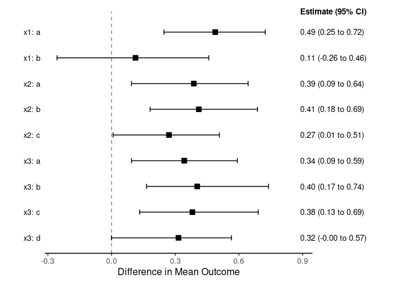

Overview
The bonsaiforest2 package has been developed to facilitate Bayesian shrinkage estimation of treatment effects in subgroups of randomized clinical trials. It supports both one-way models, which fit a separate Bayesian shrinkage model for each subgrouping variable, and global models, which fit a single model including all subgroup variables at once. For both types of models, treatment effect estimates in subgroups are derived via standardization (G-computation). The package supports continuous, binary, time-to-event (Cox), and count outcomes. It leverages brms and Stan for model fitting, allowing for a flexible choice of priors, including normal, regularized horseshoe, and R2-D2.
A comprehensive description of the methodology implemented in this R package can be found in Wolbers et al. (2026).
Installation
The latest stable release of bonsaiforest2 can be installed from the main branch on GitHub:
remotes::install_github("openpharma/bonsaiforest2")bonsaiforest2 depends on the brms package and a R interface to Stan (e.g., cmdstanr)
Quick Start Example
This example demonstrates Bayesian shrinkage estimation of treatment effects across subgroups using a global model with a regularized horseshoe prior (with default hyperprior parameters from brms), applied to the shrink_data dataset with three subgrouping variables.
library(bonsaiforest2)
# 1. Load the shrink_data package dataset
shrink_data <- bonsaiforest2::shrink_data
# 2. Fit global shrinkage model
fit_fixed <- run_brms_analysis(
data = shrink_data,
response_type = "continuous",
response_formula = y ~ trt,
unshrunk_terms_formula = ~ x1 + x2 + x3,
shrunk_predictive_formula = ~ 0 + trt:x1 + trt:x2 + trt:x3,
shrunk_predictive_prior = "horseshoe(1)",
chains = 2, iter = 1000, warmup = 500,
backend = "cmdstanr", refresh = 0
)
# 3. Extract and visualize standardized treatment effects in subgroups
subgroup_effects <- summary_subgroup_effects(fit_fixed)
print(subgroup_effects$estimates)
#> # A tibble: 9 × 4
#> Subgroup Median CI_Lower CI_Upper
#> <chr> <dbl> <dbl> <dbl>
#> 1 x1: a 0.486 0.249 0.719
#> 2 x1: b 0.105 -0.243 0.436
#> 3 x2: a 0.388 0.114 0.629
#> 4 x2: b 0.421 0.155 0.713
#> 5 x2: c 0.267 -0.00707 0.508
#> 6 x3: a 0.329 0.0389 0.545
#> 7 x3: b 0.407 0.157 0.722
#> 8 x3: c 0.384 0.110 0.727
#> 9 x3: d 0.313 0.0216 0.544
plot(subgroup_effects)